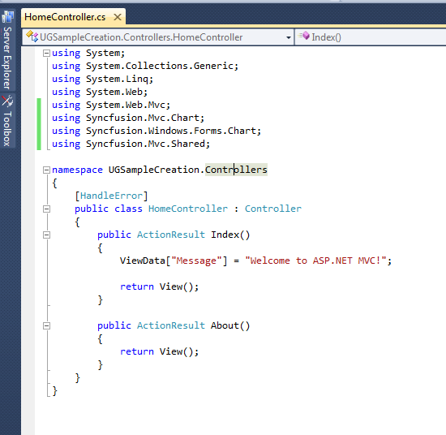
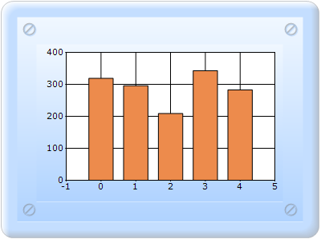

To create a chart through ChartModel:
1. Select Index.cshtml from the View/Home folder.
2. Add the following code in the SimpleChart.cshtml file, to create the Chart control in the View page.
|
[cshtml] @(new HtmlString(Html.Chart("SimpleChart",(MVCChartModel)ViewData.Model).ToString()))
|
3. In the Controller/Home folder, double-click HomeController.cs. The HomeController.cs page is displayed in the main window.

Figure 57: HomeController.cs page
4. Include the following namespaces to the HomeController by using the code displayed below:
· Syncfusion.Mvc.Shared
· Syncfusion.Mvc.Chart
· Syncfusion.Windows.Forms.Chart
|
[C#] using Syncfusion.Mvc.Chart; using Syncfusion.Mvc.Shared; using Syncfusion.Windows.Forms.Chart;
|
5. Add the SimpleChart method, as displayed below.
|
/// <summary> /// Used to create a simple chart /// </summary> /// <returns>View page, it displays the Chart</returns> public ActionResult SimpleChart() { MVCChartModel simpleChart = new MVCChartModel(); simpleChart.ShowLegend = false; simpleChart.SmoothingMode = System.Drawing.Drawing2D.SmoothingMode.AntiAlias; simpleChart.Skins = ChartModelSkins.Office2007Blue; simpleChart.BorderAppearance.SkinStyle = ChartBorderSkinStyle.Pinned; ViewData.Model = simpleChart; return View(); }
|
Code Explanation:
An Object created for MVCChartModel and the following chart properties are assigned to a model.
ShowLegend - Gets or sets whether the legend for the Chart control needs to be visible or not.
SmoothingMode - Specifies how the chart elements should be rendered.
Skins - Gets or sets a Skin to apply for the Chart control.
SkinStyle - Specifies the border skin style.
6. Pass the model to view by using the ViewData. This will pass the chart properties from the controller to view.
Syntax:
ViewData.Model = simpleChart;
7. Run the application, to get the following output.

Figure 58: Chart control added to the application